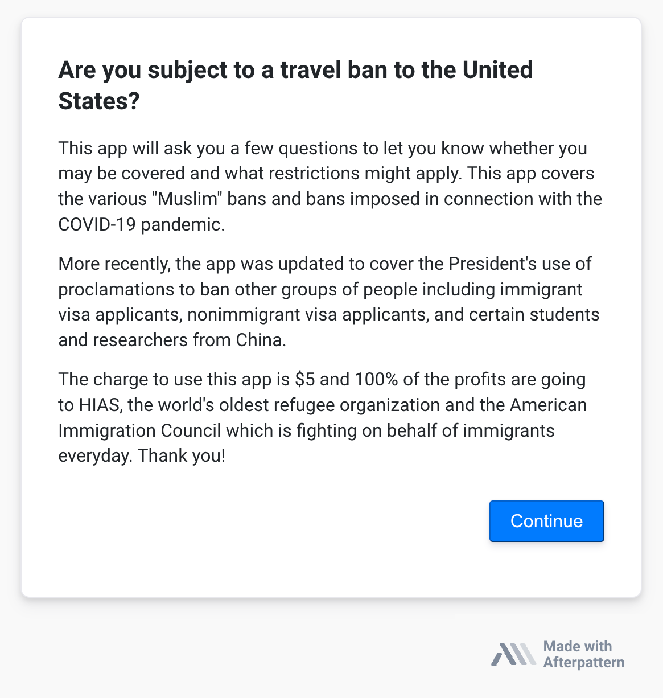

Before it was acquired by NetDocuments in November 2021, Afterpattern was the preferred app development tool for some of the most innovative legal professionals in the United States. These apps not only won national and regional awards, they helped more than 500,000 people access a wide range of traditionally expensive legal services; everything from opting into the CDC's eviction moratorium to keep tenants in their home during the COVID pandemic to understanding whether the Trump administration's "Muslim travel ban" applied to them (and what to do about it if it did).
One of our biggest challenges at Afterpattern was helping attorneys understand why they should build legal apps when they had never done so in the past. Afterpattern was a new category of product. This is far more difficult to sell than an established category of product, but also far more rewarding if you get it right. A big part of getting it right was highlighting the apps of our early-adopters. That is the purpose of this article.
"This app is a good example of how you can not only help people comply with the law, but also point out how absurd the law is in the first place."
- Greg Siskind, one of America's best known immigration lawyers and early-adopter of Afterpattern.
During it's first week in office, the Trump administration imposed the so-called "Muslim ban." This morphed into a collection of bans on different kinds of people coming to the United States; some based on nationality, some based on the kind of visa you're seeking, etc. Every one of these bans works a bit differently, and often more than one will apply to an individual's situation.
Initially, Greg created the 'Travel Ban Advisor' app as an internal tool for him and his staff to use. The app, like all Afterpattern apps, is essentially a robust questionnaire. Greg and his staff would answer some questions and the app would tell them what travel bans applied and what exemptions were available. "This is actually how most of our apps, as a tool for internal use," says Greg. "And then we discover that it's helpful to the public as well. I think you'll remember just how much demand there was from the public for this travel ban app."
This is an understatement. When Greg shared his travel ban app on Twitter, he crashed the Afterpattern servers.
This is another app made by Greg Siskind (we were so lucky for a champion like him).
The background: The Trump administration imposed a new rule for how employers must calculate the wages owed to foreign workers. The rule was imposed without notice, it was complicated, and it made drastic changes to existing law. All employers were going to be effected by it, so Greg, being a tech savvy entrepreneurial attorney, decided to make an app for it. The app would help employers figure out how, exactly, they were going to be financially impacted by this rule.
The app applied the formula provided in the rule (the end-user of the app, the employer, answers a series of questions and the app spits out the wage they're required to pay their foreign worker). This is where things took a turn...
The Department of Labor provided examples of how this rule should be applied. The examples included all the inputs an employer would enter into Greg's app, along with the output (the foreign worker wage) the rule requires. The figures produced by Greg's app were supposed to match the outputs listed in the government's examples, but they didn't.
"Initially," Greg remembers, "we thought the app didn't work. Our app essentially reduced the new regulation into computational logic, so we thought there was something wrong with the logic. But as we kept digging, we eventually realized it was was the government's examples that wasn't complying with the rule."
The rule was so complex that even its authors, the government, couldn't accurately apply it, but Greg's app could. There is no room for human-error when you reduce a rule to computational logic (except, of course, if you imbue human-error into your logic).